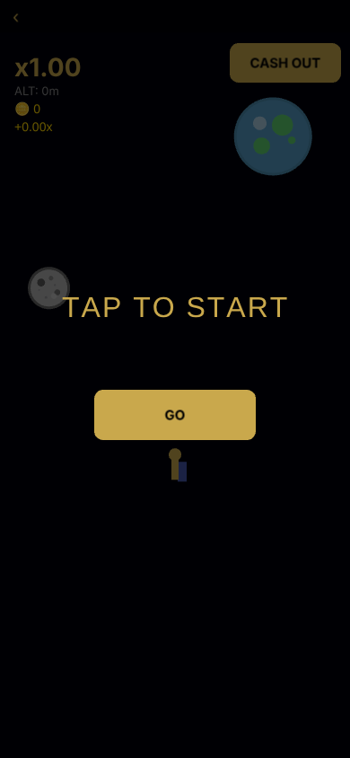
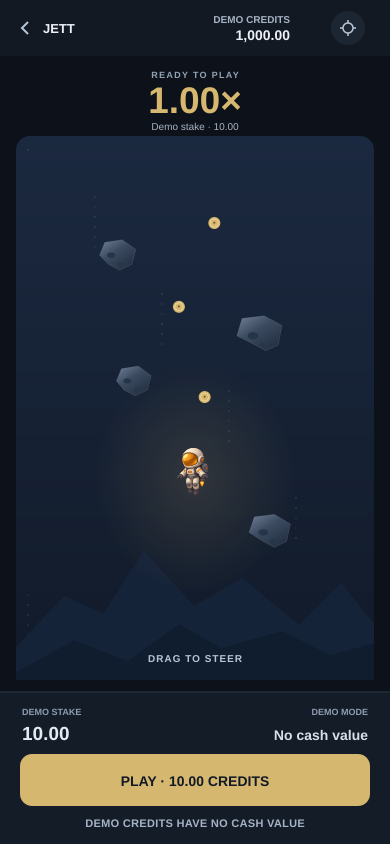
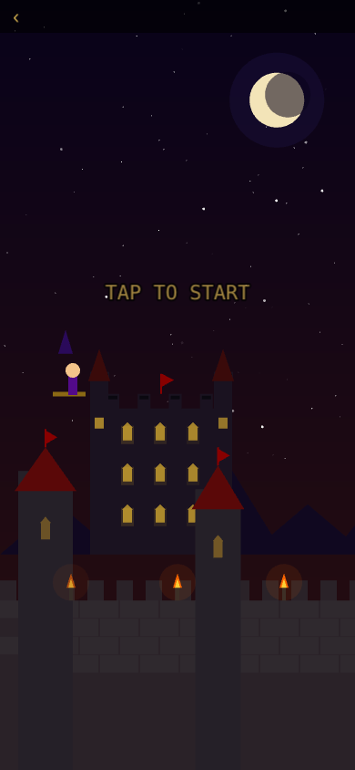
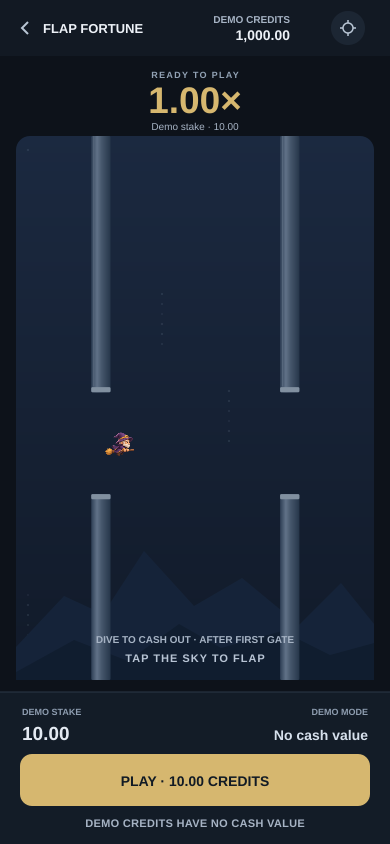
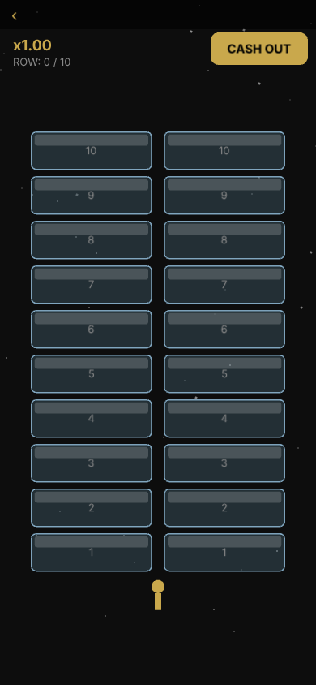
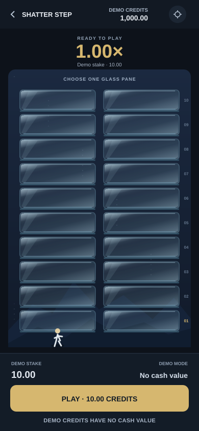

Left: real ready-screen captures from Opus’s independent audit. Right: artist’s proposed ready-state layouts. The right images are concepts, not an implemented “after” or evidence of improved performance. World art in Flap’s concept uses an in-play geometry fixture; production ready must retain its actual initial state.






Implementation review must replace concepts with seeded browser gameplay captures at matched viewport, hardware/backend, phase and DPR. No production files were changed by this package.